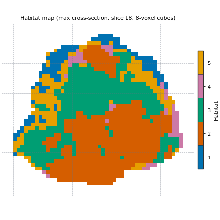
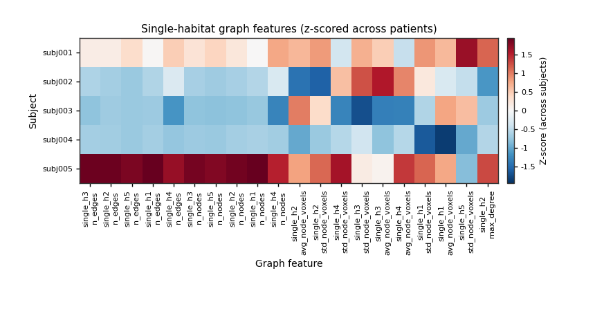

Note
Go to the end to download the full example code.
Habitat graph network features
Background. Volume fractions say how much of each habitat a tumour has; they do not say how the habitat is arranged. The same 30 % of a habitat can be one compact mass or a scatter of small islands. HABIT’s graph family turns the habitat map into a network and measures that arrangement with standard network statistics.
Purpose. You will fit the approved two-step analysis on two demo patients, label all five demo patients with the saved definition, print a short table of graph metrics with a one-line meaning for each column, draw the lattice and the network on one slice, and see how the numbers change when nodes and edges are built another way.
When to use. When your question is about spatial organisation – fragmented versus compact habitats, habitats that interleave versus habitats that sit side by side – rather than only about how much of each habitat there is.
Key terms. Full definitions are on Concepts.
node (default, ``node_method=”uniform_grid”``) – the tumour bounding box is cut into cubes of
block_size=8voxels per side. A cube is kept only when more than 20 % of it lies inside the tumour (block_min_coverage=0.2). Inside each kept cube, every connected piece of one habitat becomes one node, placed at that piece’s centroid. A cube that holds two habitats therefore gives at least two nodes.edge (default, ``edge_method=”min_distance”``) – two nodes are linked when their closest voxels are at most
distance_threshold=5voxels apart. The unit is voxels, not millimetres. Pieces that touch across a cube face are linked; two pieces with a whole empty cube between them are about 8 voxels apart and are not.single-habitat graph (``single_h<i>_*`` columns) – only the nodes of habitat
iand the edges between them. It describes how that one habitat hangs together.pair graph (``pair_h<i>_h<j>_*`` columns) – the nodes of habitats
iandjtogether. Cross-habitat edges describe how the two habitats touch and interleave.extended metrics (``include_extended_metrics``) – extra columns per graph: global and local efficiency, a small-world coefficient, a rich-club coefficient, and betweenness / degree / local-efficiency distribution summaries.
Analysis definition. The page uses the approved two-step definition
(four DCE phases, subject-level winsorize + z-score, 30 k-means
supervoxels, pool, 10-bin cohort binning, k-means 2..10 habitats by
elbow, nearest-centroid assignment) with graph extended metrics off.
The comparison at the end varies ONE factor: how nodes and edges are
built (node_method="component" with edge_method="adjacency").
Note
The habitat definition is fitted on two patients and applied to the other three. That is a demo of the mechanics on the 5-subject demo cohort, not a study. Graph metrics are computed on the full 3-D habitat map; the network figure shows one 2-D slice for display only.
Change DATA / MODALITIES / ROI to your preprocessed tree.
Load the cohort
The first two demo patients define the habitats; all five get a graph row. The demo pack is cached after the first download. sphinx_gallery_thumbnail_number = 2
import time
from pathlib import Path
import matplotlib.pyplot as plt
import pandas as pd
from habit.contracts import cohort_from_directory
from habit.datasets import fetch_demo
from habit.habitat_features import GraphHabitatFeatures
from habit.execution import backend_from_policy
from habit.recipes import Study
from habit.spec import HabitatSpec, Spec, Stage
from habit.spec.policy import RunPolicy
from habit.viz import (
plot_graph_feature_heatmap,
plot_habitat_graph_network_2d,
plot_habitat_graph_slice,
)
# Change DATA / MODALITIES / ROI to your preprocessed layout.
DATA = fetch_demo()
MODALITIES = ("pre_contrast", "LAP", "PVP", "delay_3min")
ROI = "LAP"
cohort = cohort_from_directory(DATA, modalities=MODALITIES, roi=ROI)
train = cohort[:2]
Path("out").mkdir(exist_ok=True)
print(cohort)
HABIT demo data (cached)
DATA (preprocessed root): C:\Users\dongm\.habit_data\demo-data-v1\preprocessed
On-disk inventory of this folder:
subjects (5): subj001, subj002, subj003, subj004, subj005
image series: LAP, PVP, delay_3min, pre_contrast
mask keys: LAP, PVP, delay_3min, pre_contrast
example image: images/subj001/delay_3min/WATER__BH_Ax_LAVA_Flex_3min_Series0012.nrrd
example mask: masks/subj001/delay_3min/WATER__BH_Ax_LAVA_Flex_10min_Series0017_mask.nrrd
Your own data must use the same folder tree (change IDs / series names):
DATA/
images/<subject_id>/<modality>/<one image file>
masks/<subject_id>/<roi>/<one mask file>
Then load it with the same call the demos use:
cohort = cohort_from_directory(DATA, modalities=("LAP",), roi="LAP")
Swap DATA / modalities / roi to match your tree. Mask key is often the
same as one image series (here LAP).
Cohort(5 subjects [subj001, subj002, subj003, subj004, subj005])
Fit the habitats and label every patient
The approved definition. The graph stage is the last quantify
stage; its parameters are the GraphHabitatFeatures constructor
arguments. Everything not listed keeps the library default
(uniform-grid nodes, 8-voxel cubes, closest-voxel edges within 5).
spec = HabitatSpec(
name="graph_network_two_step",
stages=(
# One intensity column per DCE phase, voxels inside the ROI.
Stage("extract", Spec("raw", {"modalities": list(MODALITIES), "roi": ROI})),
# Subject-level: clip each column to the patient's own 1st..99th percentile.
Stage("preprocess", Spec("winsorize", {"winsor_limits": [0.01, 0.01]})),
# Subject-level: rescale each column to 0..1 with the patient's own range.
Stage("preprocess2", Spec("zscore")),
# 30 supervoxels per tumour; these rows are what the cohort model clusters.
Stage("partition", Spec("kmeans", {"n_supervoxels": 30})),
Stage("pool", Spec("pool")),
# Cohort-level: bin edges learned on the pooled training supervoxels,
# stored inside the model and reused for new patients.
Stage(
"fit",
Spec(
"kmeans",
{"min_habitats": 2, "max_habitats": 10, "validation": "elbow", "n_init": 10},
),
),
Stage("assign", Spec("nearest_centroid")),
Stage("volume", Spec("volume")),
Stage("msi", Spec("msi")),
Stage("ith", Spec("ith_score")),
# Extended metrics off: the short default table. The constructor
# default of GraphHabitatFeatures is include_extended_metrics=True.
Stage("graph", Spec("graph", {"include_extended_metrics": False})),
),
random_seed=0,
)
result = Study(spec).fit_predict(
train,
backend=backend_from_policy(
RunPolicy(backend="serial", on_subject_failure="continue")
),
)
print(result.habitat_model.summary())
# The other three patients are labelled with the fitted definition
# (no refit). Passing ``spec=`` runs the same quantify stages on them.
prediction = Study.from_model(result.habitat_model, spec=spec).predict(cohort[2:])
# One row per patient, training rows first.
table = pd.concat(
[result.features.frame, prediction.features.frame], ignore_index=True
).set_index("subject")
habitat_maps = list(result.habitat_maps) + list(prediction.habitat_maps)
graph_columns = [c for c in table.columns if c.startswith(("single_h", "pair_h", "graph_"))]
print("habitat ids:", habitat_maps[0].habitat_ids)
print("graph columns:", len(graph_columns), "of", table.shape[1])
Cohort.map[_ComputeUnits]: 0%| | 0/2 [00:00<?, ?it/s]
Cohort.map[_ComputeUnits]: 50%|█████ | 1/2 [00:04<00:04, 4.11s/it]
Cohort.map[_ComputeUnits]: 100%|██████████| 2/2 [00:05<00:00, 2.93s/it]
Cohort.map[_ComputeUnits]: 100%|██████████| 2/2 [00:05<00:00, 2.93s/it]
Cohort.map[_AssignPrecomputedUnits]: 0%| | 0/2 [00:00<?, ?it/s]
Cohort.map[_AssignPrecomputedUnits]: 50%|█████ | 1/2 [00:01<00:01, 1.13s/it]
Cohort.map[_AssignPrecomputedUnits]: 100%|██████████| 2/2 [00:02<00:00, 1.02s/it]
Cohort.map[_AssignPrecomputedUnits]: 100%|██████████| 2/2 [00:02<00:00, 1.02s/it]
HabitatModel kmeans-3432f3b65bfec11a
habitats : 5
features (4) : pre_contrast, LAP, PVP, delay_3min
defining cohort : n=2
modalities : pre_contrast, LAP, PVP, delay_3min
cohort digest : cc1b16a34cc7478d...
produced by : habitat_model_fitter.kmeans
habit version : 3.0.0
random seed : 0
preprocessing state: inertia, selection_report, validation
Cohort.map[_LabelAndDescribe]: 0%| | 0/3 [00:00<?, ?it/s]
Cohort.map[_LabelAndDescribe]: 33%|███▎ | 1/3 [00:02<00:05, 2.53s/it]
Cohort.map[_LabelAndDescribe]: 67%|██████▋ | 2/3 [00:05<00:02, 2.69s/it]
Cohort.map[_LabelAndDescribe]: 100%|██████████| 3/3 [00:14<00:00, 4.94s/it]
Cohort.map[_LabelAndDescribe]: 100%|██████████| 3/3 [00:14<00:00, 4.94s/it]
habitat ids: (1, 2, 3, 4, 5)
graph columns: 608 of 663
A curated metrics table
The graph family writes several hundred columns (every metric for every
habitat and every habitat pair, plus size-normalised companions ending
in _norm / _per_habitat_volume). A study picks the few that
answer its question. The ten below illustrate the family on habitat 1
and the habitat 1 / habitat 2 pair; the same metrics exist for every
other habitat id and pair.
curated = {
"graph_num_nodes_total": "nodes of all habitats together",
"single_h1_n_nodes": "pieces of habitat 1 (one per connected piece per kept cube)",
"single_h1_avg_degree": "mean number of habitat-1 neighbours per habitat-1 node",
"single_h1_connected_components": "separate groups of linked habitat-1 nodes (1 = one network)",
"single_h1_largest_component_ratio": "share of habitat-1 nodes in the biggest group",
"single_h1_avg_clustering": "how often two neighbours of a node are also linked",
"single_h1_modularity": "how strongly the habitat-1 network splits into communities",
"pair_h1_h2_n_edges": "edges between a habitat-1 node and a habitat-2 node",
"pair_h1_h2_isolated_ratio_1": "share of habitat-1 nodes with no habitat-2 neighbour",
"pair_h1_h2_habitat_assortativity": "> 0: nodes link to their own habitat more than to the other",
}
meaning = pd.DataFrame({"column": list(curated), "meaning": list(curated.values())})
print(meaning.to_string(index=False))
print()
print(table[list(curated)].round(3).T.to_string())
column meaning
graph_num_nodes_total nodes of all habitats together
single_h1_n_nodes pieces of habitat 1 (one per connected piece per kept cube)
single_h1_avg_degree mean number of habitat-1 neighbours per habitat-1 node
single_h1_connected_components separate groups of linked habitat-1 nodes (1 = one network)
single_h1_largest_component_ratio share of habitat-1 nodes in the biggest group
single_h1_avg_clustering how often two neighbours of a node are also linked
single_h1_modularity how strongly the habitat-1 network splits into communities
pair_h1_h2_n_edges edges between a habitat-1 node and a habitat-2 node
pair_h1_h2_isolated_ratio_1 share of habitat-1 nodes with no habitat-2 neighbour
pair_h1_h2_habitat_assortativity > 0: nodes link to their own habitat more than to the other
subject subj001 subj002 subj003 subj004 subj005
graph_num_nodes_total 487.000 161.000 75.000 130.000 1045.000
single_h1_n_nodes 60.000 20.000 9.000 16.000 195.000
single_h1_avg_degree 6.667 4.600 3.778 3.375 6.923
single_h1_connected_components 3.000 1.000 1.000 2.000 3.000
single_h1_largest_component_ratio 0.950 1.000 1.000 0.812 0.974
single_h1_avg_clustering 0.573 0.750 0.600 0.527 0.616
single_h1_modularity 0.425 0.274 0.121 0.508 0.370
pair_h1_h2_n_edges 142.000 32.000 23.000 76.000 796.000
pair_h1_h2_isolated_ratio_1 0.200 0.300 0.222 0.188 0.123
pair_h1_h2_habitat_assortativity 0.617 0.606 0.479 0.128 0.410
The lattice and the network on one slice
plot_habitat_graph_slice draws the habitat labels with the 8-voxel
lattice on top: every dashed square is one cube. The network figure
rebuilds the graphs with the same node and edge rules on that one 2-D
slice, for display only: the first row has one panel per habitat
(white dots = nodes, white lines = edges inside that habitat), the
following rows one panel per habitat pair (only the cross-habitat edges
are drawn). Its n / e counts are for the slice, not the 3-D
table. Both functions take the label array of the full 3-D map and
choose the slice with the largest cross-section.
subject_id = habitat_maps[0].subject_id
labels = habitat_maps[0].label_array
fig = plot_habitat_graph_slice(labels, block_size=8)
fig.savefig("out/graph_network_lattice.png", dpi=150, bbox_inches="tight")
plt.show()
fig = plot_habitat_graph_network_2d(labels, block_size=8)
if fig is not None:
fig.savefig("out/graph_network_network.png", dpi=150, bbox_inches="tight")
plt.show()


All patients at a glance
plot_graph_feature_heatmap z-scores each column across the rows
(here: the five demo patients) and keeps the n_features columns with
the largest variance among the single-habitat metrics. With five
patients this is a way to look at the table, not a statistical result.
fig = plot_graph_feature_heatmap(
table.reset_index(),
subject_col="subject",
feature_group="single",
n_features=20,
title="Single-habitat graph features (z-scored across patients)",
)
fig.savefig("out/graph_network_heatmap.png", dpi=150, bbox_inches="tight")
plt.show()

Another node and edge rule
ONE factor changes: nodes become whole connected pieces of a habitat
(node_method="component"; pieces larger than
subdivide_region_voxels=1000 voxels are still cut into 8-voxel
cubes), and two nodes are linked only when they touch in at least
adjacency_min_voxels=10 neighbouring voxel pairs
(edge_method="adjacency", 26-neighbourhood). The habitat maps are
the same; only the graph built on them differs. The extractor is the
same component the graph stage uses, called as
extractor(subject, habitat_map).
default_graph = GraphHabitatFeatures(include_extended_metrics=False)
component_graph = GraphHabitatFeatures(
node_method="component",
edge_method="adjacency",
include_extended_metrics=False,
)
compare_columns = ["graph_num_nodes_total", "single_h1_n_nodes", "single_h1_n_edges", "single_h1_avg_degree"]
rows = []
for subject, habitat_map in zip(cohort, habitat_maps):
default_row = default_graph(subject, habitat_map).frame.iloc[0]
component_row = component_graph(subject, habitat_map).frame.iloc[0]
row = {"subject": subject.subject_id}
for column in compare_columns:
row[f"{column} (grid)"] = float(default_row[column])
row[f"{column} (component)"] = float(component_row[column])
rows.append(row)
comparison = pd.DataFrame(rows).set_index("subject")
print(comparison.round(2).T.to_string())
# The stage default and the direct call must agree on the default rule.
same_as_stage = all(
float(comparison.loc[sid, "graph_num_nodes_total (grid)"]) == float(table.loc[sid, "graph_num_nodes_total"])
for sid in comparison.index
)
print("direct default call == graph stage:", same_as_stage)
subject subj001 subj002 subj003 subj004 subj005
graph_num_nodes_total (grid) 487.00 161.0 75.00 130.00 1045.00
graph_num_nodes_total (component) 219.00 49.0 29.00 43.00 418.00
single_h1_n_nodes (grid) 60.00 20.0 9.00 16.00 195.00
single_h1_n_nodes (component) 19.00 7.0 2.00 5.00 78.00
single_h1_n_edges (grid) 200.00 46.0 17.00 27.00 675.00
single_h1_n_edges (component) 9.00 0.0 0.00 0.00 60.00
single_h1_avg_degree (grid) 6.67 4.6 3.78 3.38 6.92
single_h1_avg_degree (component) 0.95 0.0 0.00 0.00 1.54
direct default call == graph stage: True
What the extended metrics add
include_extended_metrics=True (the constructor default) adds, per
single and pair graph, global and local efficiency, the small-world
coefficient (Humphries’ analytic Erdos-Renyi comparison by default,
graph_null_sampler="analytic"), a rich-club coefficient against one
configuration-model random graph, and betweenness / degree-skewness /
node local-efficiency summaries. They are computed on the largest
connected piece of each graph, and small-world is reported only for
graphs with at least extended_min_nodes=10 nodes (0 otherwise).
The extra all-pairs path and per-node neighbourhood computations are
why it takes longer; graph_null_sampler="config" or "rewire"
replaces the small-world column with a 100-graph degree-preserving
ensemble and is slower still. Timing below is for one small patient on
the machine that built this page. The extended call is timed twice:
the first call in a Python process also pays a one-time setup cost.
subject, habitat_map = cohort[1], habitat_maps[1]
extended_graph = GraphHabitatFeatures(include_extended_metrics=True)
start = time.perf_counter()
short_row = default_graph(subject, habitat_map).frame
short_seconds = time.perf_counter() - start
extended_seconds = []
for _ in range(2):
start = time.perf_counter()
extended_row = extended_graph(subject, habitat_map).frame
extended_seconds.append(time.perf_counter() - start)
added = sorted(set(extended_row.columns) - set(short_row.columns))
print(f"{subject.subject_id}: {short_row.shape[1]} columns in {short_seconds:.2f} s without extended metrics")
print(f"{subject.subject_id}: {extended_row.shape[1]} columns with extended metrics, "
f"first call {extended_seconds[0]:.2f} s, repeat call {extended_seconds[1]:.2f} s")
print("added for habitat 1:", [c for c in added if c.startswith("single_h1_")])
subj002: 609 columns in 0.24 s without extended metrics
subj002: 824 columns with extended metrics, first call 0.57 s, repeat call 0.46 s
added for habitat 1: ['single_h1_betweenness_max', 'single_h1_betweenness_max_norm', 'single_h1_betweenness_std', 'single_h1_betweenness_std_norm', 'single_h1_degree_skewness', 'single_h1_global_efficiency', 'single_h1_local_efficiency', 'single_h1_node_local_efficiency_min', 'single_h1_node_local_efficiency_std', 'single_h1_rich_club_coefficient', 'single_h1_small_world_sigma']
How to read the result
Measured on this page (K = 4 by the elbow rule on subj001 + subj002; habitat ids 1..4):
Graph size follows tumour size:
graph_num_nodes_totalwas 481, 135, 105, 124 and 779 for subj001..subj005 (ROI 34694, 9858, 6156, 5840 and 80084 voxels). Compare raw counts only between tumours of similar size, or use the*_norm/*_per_habitat_volumecompanions.Habitat 1 formed one linked network in subj002, subj003 and subj004 (
single_h1_connected_components= 1) and two groups in subj001 and subj005, with the largest group holding about 99 % of the nodes.pair_h1_h2_habitat_assortativitywas close to zero (about -0.03 to 0.07): in this graph habitat 1 and habitat 2 nodes link to each other almost as often as to their own habitat.The component / adjacency rule builds far fewer nodes and edges on the same maps (subj001: 185 instead of 481 nodes, 52 instead of 737 habitat-1 edges). The two rules are different graph definitions: do not mix their columns in one analysis, and report which one you used (the rule is stored in the stage
Specand in the run manifest).Extended metrics added 140 columns (412 -> 552 for four habitats).
These are five demo patients; the numbers show what the columns contain, not how they relate to any clinical outcome.
Where to go next
The graph family step by step, including one-step maps and label matching: Habitat graph network features.
The other habitat feature families in one table: Habitat radiomics with volume, MSI and ITH.
The analysis definition used here: Two-step habitats with a Spec.
Export the table and the methods text: Export results and draft the methods paragraph.
Total running time of the script: (0 minutes 32.451 seconds)